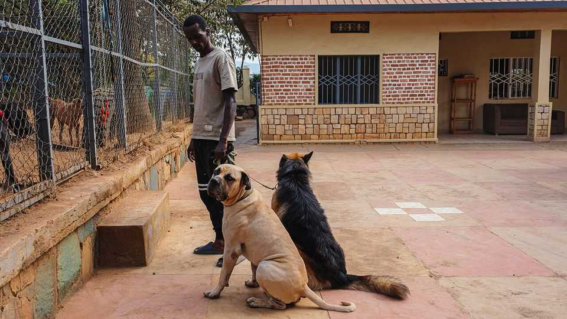

Why Rwandans are warming to dogs
Shunned after the genocide, they have become a status symbol

Jul 30th 2026
For many years dogs were loathed in Rwanda. Rwandans turned against them after the genocide in 1994, when Hutu militias killed between 500,000 and 800,000 Tutsis, Twa and moderate Hutus. Stray dogs ate the bodies. Tutsi rebels led by Paul Kagame, now the president, shot the dogs as they took control of the country. But the image of canines gorging on corpses stayed with many people.
More than 30 years on, dogs are still not universally popular. Alidry Ineza has been chased with a knife, shouted at and called a mzungu (Swahili for white person, though he is black), simply because he owns 12 of them. Yet attitudes are changing. Based in Kigali, the capital, Mr Ineza is one of Rwanda’s best-known dog trainers. His company, Paws and Hands, offers day care, walking, grooming and training for purebred dogs, now a status symbol for Rwanda’s urban middle class.
Dogs, along with houses and cars, are signs of new wealth in a country that recorded annual GDP growth of 9.4% in 2025. They are not cheap. A German shepherd costs 200,000-500,000 Rwandan francs ($135-$340). A Dogo Argentino recently sold for 2m francs ($1,360), more than the country’s annual GDP per person of $1,124.
There is no data on how many purebred dogs Rwanda has. Yet they support a sizeable market in Kigali. Pet shops and doggy day-care centres have sprung up around the city. Owners fork out for walkers, groomers and trainers. Mr Ineza, who is 28, started training dogs ten years ago, initially earning 30,000 francs (then $38) a month. Now he employs 15 people.
Mr Ineza partly credits Rwanda’s police with starting the furry trend. In 2017 a news segment showed off their German shepherd unit. People did not associate the sleek police dogs with the street dogs they had seen during the genocide, and “suddenly everyone wanted one,” he says.
The love for purebred dogs does not yet extend to strays, says Olivia Clarke, who runs Wags, a shelter for abandoned dogs. Unwanted puppies are often thrown over the organisation’s wall. Finding a home for a local mutt is hard. Yet that may be merely a question of branding. In Rwanda’s unregulated dog-breeding market, any white dog can be sold as a “Maltese”. And some of the “German shepherds” in Kigali’s doggy day-care centres look suspiciously like their stray cousins. ■
Sign up to the Analysing Africa, a weekly newsletter that keeps you in the loop about the world’s youngest—and least understood—continent.